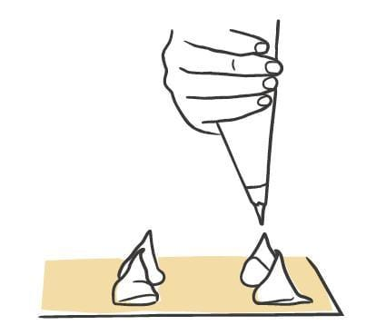
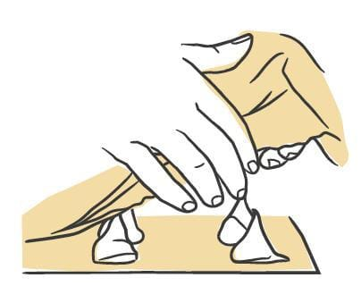
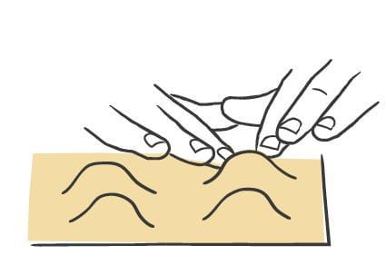
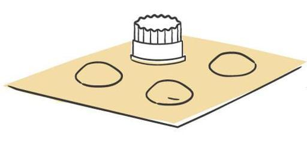
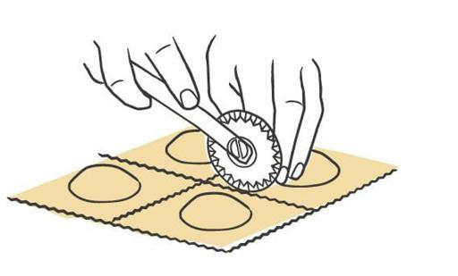
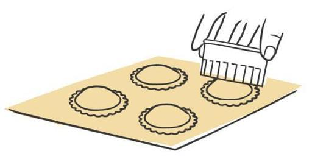
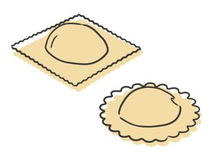

Pasta / Shapes
Ravioli
- Dough
- Egg Dough
- Rest
- 45 minutes to 1 hour uncovered in the refrigerator
- Source
- Pasta, Missy Robbins
- Formed
- stuffed
- Region
- All of Italy, north to south, and worldwide
Shaping







Method
- Make your chosen egg-based dough, then roll and sheet it.
- Dust a wooden board with 00 flour. Cover a sheet pan with parchment, then dust the parchment with semolina.
- Trim the sheets to 18-inch lengths with a knife and cut away the ragged edges. Save the scraps for soup. Keep the sheets under plastic wrap or a towel.
- Lay one sheet on the board. Using a pastry bag cut to a 1-inch opening, pipe mounds of filling roughly 1 1/2 inches across and 1/2 inch high in an even run down the sheet, leaving about 2 inches between mounds.
- If the dough feels dry rather than moderately tacky, mist it with a spray bottle held 8 to 10 inches above the board so the second sheet will stick. Skip this if the dough is already tacky.
- Lay a second sheet gently over the first, edges lined up and no wrinkles.
- Press around each mound with your two index fingers to expel the air pockets. For insurance, flip a #30 (1 1/8-inch) plain round cutter to its dull side and press gently over each mound to expel the last of the air.
- For square ravioli, cut 2 1/2-inch squares with a fluted pastry cutter or fluted dough divider. A 2 1/2-inch fluted square cutter does the same thing.
- For round ravioli, use a #60 (2 3/8-inch) plain round cutter. Press straight down with your palm flat on top of the cutter, then twist it clockwise under that pressure to finish the cut.
- Lift the sheets from one end to peel away the surrounding scrap. Discard it or save it for soup.
- Set the pieces on the prepared pan in a single layer and dust the pan again with semolina.
- Repeat with the remaining sheets.
- Refrigerate uncovered for 45 minutes to 1 hour to dry. Covered pieces sweat and get too wet. To hold longer, lay plastic wrap loosely over the pan and refrigerate up to 8 hours.
Notes
- Two-sheet construction from 18-inch sheets. The filling goes on the bottom sheet and a second sheet covers it.
- Filling per piece: a mound 1 1/2 inches across and 1/2 inch high, piped through a 1-inch opening.
- Spacing: mounds 2 inches apart. The cut is either a 2 1/2-inch square or a 2 3/8-inch round.
- Cutters: #30 (1 1/8-inch) plain round cutter used dull side down to expel air, then either a fluted cutter or divider for 2 1/2-inch squares, or a #60 (2 3/8-inch) plain round cutter for rounds.
- Cutting technique for rounds: press with a flat palm, then rotate clockwise under pressure so the cut goes all the way through.
- Air is expelled twice before cutting, first with two index fingers and then with the dull cutter.
- The author's restaurant version is round, roughly 2 inches across, with a ruffled edge. The square version is the red-sauce shape.
- Storage: 45 minutes to 1 hour uncovered to dry, then up to 8 hours refrigerated under loose plastic.
- Red sauce is the default finish. Otherwise the shape is a test bed for any filling.
Used in
- Aubergine Ravioli
- Butternut Squash and Marjoram Ravioli
- Butternut Squash Ravioli
- Crab Ravioli
- Crab Ravioli with Crab Sauce
- Crab with Turnip
- Duck Ravioli with Langoustines
- Goat's Cheese Ravioli
- Langoustine Ravioli
- Oxtail Ravioli
- Pink Prawn Ravioli
- Polenta Ravioli
- Prawn and Smoked Salmon Ravioli
- Pulled Pork Raviolo
- Smoked Potato Ravioli
- Truffle Ravioli
- Turkey and Squash Ravioli
- Watercress and Egg Yolk Ravioli